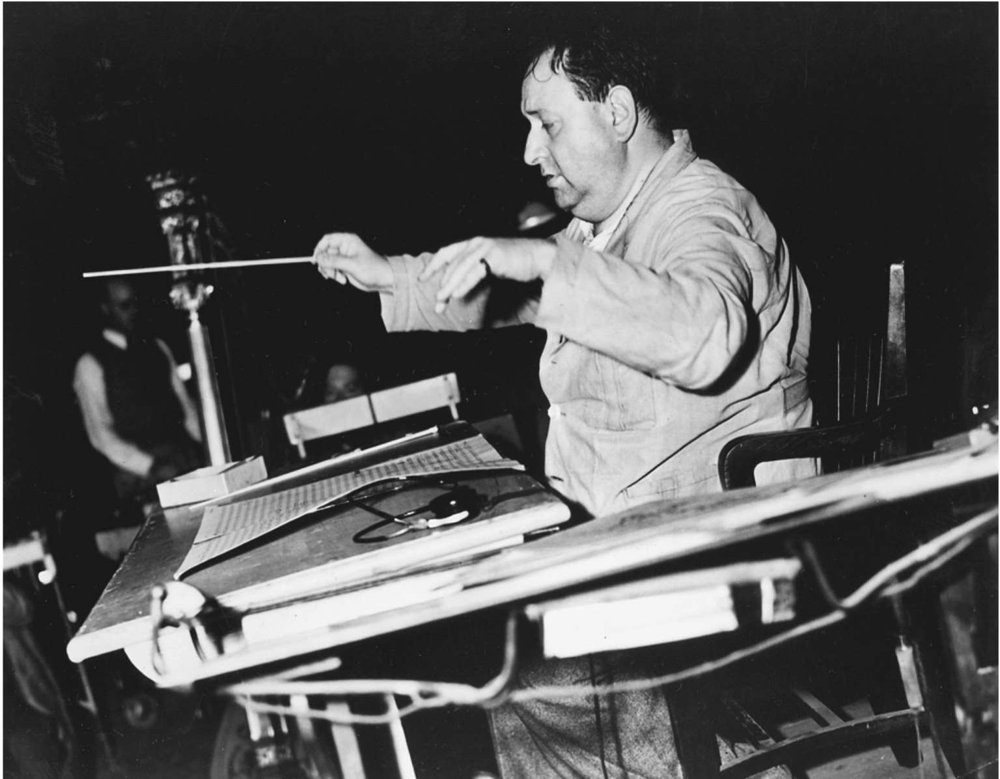
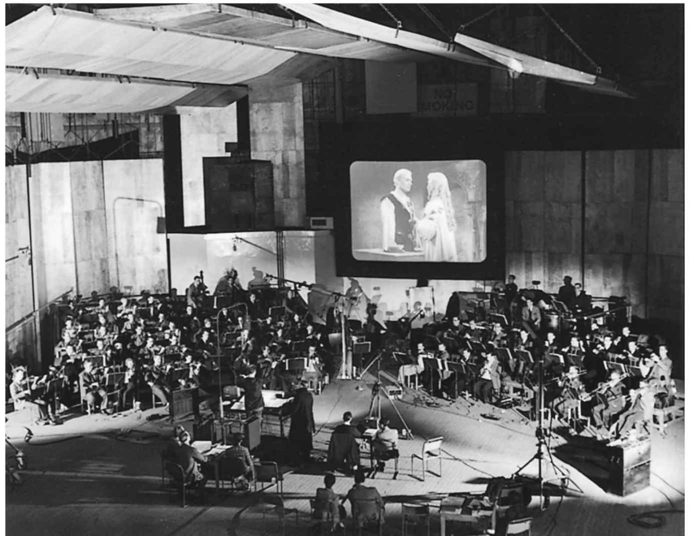

有声电影问世之前，声画同步早就已经实现了。正如我们所知，爱迪生公司的W. K. L.迪克逊早在1984年就实现了声画同步。德国的奥斯卡·迈斯特、法国的里昂·高蒙、英国的塞西尔·赫普沃思以及波兰的卡齐米日·普洛辛斯基也分别为大银幕投影设计了声音系统，每种声音系统都能实现留声机和放映机的同步。这些系统存在各种问题：留声机扩音能力有限，唱片不够长、音质不够好，留声机和放映机不能同步，以及需要大量的启动资金。到1910年代，美国和德国争相出现新技术，这些问题得以解决，或者完善了碟片录音手段（美国的维他风录声系统），或者创造了采用光学录音技术的胶片录音系统（在德国叫“三位合作”，在美国叫“有声电影”）。在苏联和日本，很快也有人发明了相似的技术。
有声电影和流行歌曲的作用
接下来音乐成为主角。华纳兄弟影业公司为升级自己的影片配乐而投资维他风录声系统，以便在竞争中取得优势。他们甚至聘请了纽约爱乐乐团为其首部维他风风格的影片《唐璜》（1926）录制配乐，电影放映时在乐池中配有扩音器。阿尔·乔森在华纳兄弟影业公司的下一部维他风风格的歌舞片《爵士歌手》（1927）中的即兴表演迎来了一场有声影片的革命。虽然电影对白推动了新技术的发展，但还是歌舞片充分利用了这一新技术。在美国，正是歌舞片带来了重要的声效改良，如影片《哈利路亚》（1929）中的后期录音合成以及影片《欢呼》（1929）中的双声道录音和后期录音。在欧洲早期成功的有声电影也都是歌舞片：德国的《蓝天使》（1930）、法国的《百万法郎》（1975）及英国的《埃弗格林》（1934）。无论在美国还是其他国家，歌舞片都是非常赚钱的，因此，在非歌舞片中加入歌曲，甚至也很常见，电影制片厂通过乐谱和唱片来推销这些歌曲。
本土的歌舞表演凭借新声音技术手段，作为表现国家文化的平台，很快就走向世界。好莱坞出品的整合歌舞片数量众多，推动了叙事的发展。好莱坞的整合歌舞片在拉丁美洲影响深远，这一流派同当地音乐融合，发展出新的形式：阿根廷的“探戈舞曲”（《再见了，布宜诺斯艾利斯》，1938）；巴西的“三级片”，起源于狂欢节和非裔巴西人的桑巴舞（《哈罗，哈罗，狂欢节》，1936）；墨西哥的“乡村喜剧”，大量使用墨西哥流浪乐队演奏（《大庄园》，1936）。在1940年代，墨西哥电影的黄金时期，本土流行歌曲经过改写，被用在歌舞片中，例如埃米里奥·费尔南德斯的《玛丽娅·康德莱西娅》（1944）和《野花》（1943）。
甚至在斯大林时代的苏联，尽管好莱坞歌舞片相关的东西52被人们看作腐化的象征，整合歌舞片也是一种重要的形式。歌舞片依靠唱片业的明星效应，注入苏维埃政权的意识形态，有以乡村为背景的，例如《拖拉机手》（1939），或者城市题材的，例如《快乐的家伙们》（1934），集原创歌曲、苏联军队和爱国歌曲、民间音乐于一身。
在苏联，非歌舞片中同样有流行歌曲和民歌的元素。想想政治意识如此浓厚的剧目《一个女性》（1975）和《金山》（1975）中有流行歌曲《生活多么美好》和《假如我有金山》，或者想想在苏联歌舞片盛行的大环境下，史诗巨作《亚历山大·涅夫斯基》（1938）中令人印象深刻的大合唱，这很有意思。无论是歌舞片里还是歌舞片外的歌曲，都成为苏联电影几十年的特色。
好莱坞式的整合歌舞片在中国没有能够发展起来，虽然在20世纪晚期，香港出现了一种与之类似的电影样式。这并非表明在中国的第一批有声影片中歌曲不重要；歌曲被改写成各种不同样式，通常包括能唱歌的演员。中国戏曲是歌舞片中乐曲源源不断的源泉。中国第一部有声影片《歌女红牡丹》（1931）采用了中国戏曲中的四首歌曲，由戏曲表演艺术大师梅兰芳配音，梅兰芳在戏曲舞台上男扮女装，以塑造女性形象而著名。1930年代，左翼电影制作人会在戏曲歌曲之外为影片配革命歌曲，例如《大路》（1935）和《马路天使》（1937）。在《马路天使》中，观众们跟着银幕上的歌词一起哼唱。在香港，早期的有声影片，例如《白金龙》（1933），从中国戏曲中寻找故事素材、明星，当然还有音乐。台湾的第一部有声影片《六才子西厢记》（1955）也是以戏曲为题材的。本土歌曲，要么来自中国戏曲或流行剧目，要么根据传统或流行风格创作的原创乐曲，占领了华语电影的配乐市场，同时产生了20世纪中国最流行的一些歌曲。
歌曲对有声影片的发展很重要。然而，正如我们在华语电影中看见的那样，世界上很多地方的歌曲形式都和好莱坞的大相径庭，我们需要重新审视西方以外歌舞片的通用模式。印度的电影业甚至更加有戏剧性。19世纪印度剧院中强大的歌舞传统为无声电影时代的配乐铺平了道路，有时会听见歌手现场为影片演唱。有声影片中包含了大量的歌曲，有些甚至有五十多首！这些早期的有声影片由不同地区的电影厂出品，操着当地的口音——《阿拉姆·阿拉》（1975）是北印度语，《迦梨陀娑》（1975）是泰米尔语，《虔诚的信徒普拉拉德》（1975）是泰卢固语，这些影片中的歌曲也都是由各种不同的语言演唱——泰米尔语、泰卢固语、北印度语、孟加拉语以及梵语。本土歌曲表演在印度各地的电影景观中起了决定性的作用，然而特别是在以孟买为中心的北印度地区，有时也称宝莱坞，每一部影片，不论哪种类型，都必须囊括各种歌曲（和舞蹈）表演。
这样一来，就出现了一种杂糅的音乐形式，电影歌曲受到印度古典卡纳蒂克和印度斯坦拉格、流行民间音乐和西方和声的影响，同时，具有新颖的表演形式，也就是由歌手、受欢迎的艺术家提前录制好歌曲，演员表演时对嘴型的方式。很多录制歌手拥有大量歌迷，比演员更受欢迎，特别是拉塔·曼盖施卡和她的妹妹阿莎·波斯蕾（她声称自己录制过一万二千多首歌曲）。
拉塔·曼盖施卡自1948年出道以来一直享有很高的声誉，至今仍受大众欢迎。
电影歌曲作曲人，又称音乐监制，在影片宣传中占据突出位置，其酬金通常比电影导演高。早期有声影片中主要的音乐监制有C.拉姆钱德拉，他将北方邦地区的传统音乐同西方的摇摆乐、爵士乐和拉美节奏融合；1950年代到1980年代的尚卡尔—杰卡山组合；萨拉斯沃蒂·戴妃，第一位女音乐监制，1935年加入孟买之音电影公司，直到1950年代，在摄影棚内外她的音乐事业都风生水起。
第一批电影歌曲是由小剧团演奏的，很多乐器和无声电影时代用的一样，包括风琴和塔布拉鼓。到1930年代，又出现了小提琴、大提琴、曼陀林、钢琴、管风琴、单簧管等乐器，以及印度乐器，包括维纳琴、帕卡瓦甲鼓、贾特朗乐碗、班苏里笛、西塔琴。到1950年代，制片厂的乐队已经扩张到拥有一百多名演奏者。
在北印度影片中，电影歌曲是如此重要，以至于在制片过程中它们是首要考虑的问题：编剧的工作是为歌曲提供叙事框架。叙事适应歌曲的这一过程被称作图像化。
北印度电影为包含歌曲的影片创制了一种新模式，它不同于好莱坞制度化使用歌曲的方式，同时也带来了电影接受上的根本性变革。北印度影片以及很多其他国家类似的影片，颠倒了叙事和表演的关系，而在好莱坞的整合歌舞片中，叙事优先，歌曲只是故事情节的一部分。在北印度影片中，歌曲优先，叙事围绕歌曲展开，故事情节是歌曲图像化的手段。而且，在好莱坞歌舞片中，为了不破坏真实的错觉，歌曲表演的技术手段（提前录制、配音、后期配音）被小心翼翼地隐藏处理。在北印度影片中，这些技术手段却一览无余。歌曲不是由银幕上的角色演唱，而是由配唱歌手演唱，这一事实众所周知。因此，给观众带来的观影愉悦感显然不同于好莱坞影片，观影效果并非取决于怀疑搁置状态，相反由电影的技巧所决定。
就世界上有意义的部分而言，宝莱坞有声影片中音乐的发展方式比好莱坞更具特色。很多亚洲和非洲的民族影片在本土音乐的中心地位和叙事与表演关系的问题上，跟北印度电影不谋而合。事实上，波斯第一批有声影片就是在孟买制作的。《罗尔女孩》（1932）中有专门为这部影片创作的波斯歌曲和舞蹈。
第二次世界大战之后，伊朗出现的波斯语电影里有歌曲和舞蹈相结合的类型转换，动作影片、歌舞片和喜剧混杂，如票房获得巨大成功的影片《沙木萨》（1950），由伊朗著名的女歌手戴尔喀什主演。很快，歌曲表演就像在北印度影片中一样，由流行歌手配唱，演员需要同为他们配音的歌手建立联系。事实上，在战后，波斯歌曲和舞蹈成了必不可少的内容，所以为了满足波斯观众的观影需要，外国影片都要进行调整。因此，当好莱坞大片《宾虚》（1959）上映时，其中插入了由伊朗歌手演唱的歌曲。
埃及电影业很快成为阿拉伯世界最大的电影业之一，正如北印度电影业一样，歌曲表演在埃及电影中举足轻重。各个种类的电影中插入了音乐表演，这成为电影业最主要的产品，市场上的成功也一直持续到1960年代。在有声电影传入埃及之前，歌曲和舞蹈一直以来都是埃及文化的重要组成部分。埃及电影业有很多受欢迎的表演者，可以满足日益发展的电影业的56需要。制作埃及电影歌曲的音乐大熔炉——拉美节奏，其本身就受到非洲音乐、西方乐器法和歌曲结构、阿拉伯传统歌曲的影响——在一些影片中可以听到，例如《白玫瑰》（1934）和《情谊》（1936），这些影片让流行歌手和唱片艺术家穆罕默德·阿卜杜勒——瓦哈卜和乌姆·库勒苏姆一举成为电影明星。影片《青春的胜利》（1941）和《蜜月》（1946）中有黎巴嫩和叙利亚的音乐元素。在战后埃及最受欢迎的影片中，以音乐表演为背景的爱情故事拔得头筹，例如流行歌手蕾拉·穆拉德的《调情的女孩》（1949）。
当几家阿拉伯电影厂在20世纪后期开始采用音乐表演时，他们借鉴了埃及的模式：在黎巴嫩，有《卖戒指的人》（1965）、《萨法尔·巴勒克》（1966）和《守护人的女儿》（1968）；在摩洛哥，有《生命在于奋斗》（1968）和《安静是单行道》（1973）；在突尼斯，有《尖叫》（1972）。最近，菲利普·阿拉克廷吉导演的黎巴嫩影片《大巴音乐剧》（2005）融入了民间音乐和舞蹈的元素，同时将欧洲高科技舞曲的穿透力融入其中。
早期有声影片中的歌曲表演有不同的形式。背景音乐都遵循相似的轨迹。背景音乐——一般称为配乐——指的是作为背景播放的音乐，在影片中不处于显著位置，或者不为观众所关注。背景音乐在不同的影片中也有不同的处理方式：在北印度影片中，电影歌曲使得背景音乐黯然失色，背景音乐作曲人经常被抢风头；在苏联影片中，配乐使用的是蒙太奇手法；在华语影片和波斯语影片中，来自不同音乐领域的乐曲常常被随机组合在一起；在好莱坞影片中，背景音乐的创作和布局都是高度程式化的。
背景配乐的发展
一提到背景音乐，就会想起它的多样性。为了保持无声电影的传统，人们做过一些尝试。查理·卓别林早期的有声影片《城市之光》（1975）和《摩登时代》（1936）中几乎没有对白和音效，只采用了连续的配乐。在日本，直到1930年代都是无声电影的天下，影片放映时由影片解说员进行解说，他们试图延缓同步化声音的实现，避免失业，但这是徒劳的。具有讽刺意味的是，既然科技可以便捷地复制一流的配乐，很多影片却要么根本不使用背景音乐，要么想方设法证明它的存在。在约瑟夫·冯·斯腾伯格原本粗糙的好莱坞犯罪片《霹雳》（1929）中，在影片的高潮——越狱时，囚犯恰好在牢房中演奏音乐（仍然是冯·苏佩的《诗人与农夫》）。
同时，也有人试图创新。在好莱坞，雨果·里森费尔德曾在影片《日出》（1927）中为实现独特效果，将爵士乐队和小型管弦乐队两种不同的音乐媒介组合在一起。在法国，莫里斯·乔伯运用电子手段，为让·维果的影片《操行零分》（1933）中的一个慢动作镜头创作了一段饶有趣味的配乐。在荷兰，汉斯·艾斯勒为约里斯·伊文思的纪录片《新地球》（1934）创作配乐，用自然的声响为机器配音，用音乐为人配乐。在英国，亚瑟·本杰明为了弥补早期录音技术的不足，尝试改变了管弦乐编曲的方式，减少弦乐，甚至用大号和钢琴实现拨奏的效果。在柏林的德国电影研究所，音乐现象的电影等效被识别，以便在两者之间实现同步效果（例如为声音渐强进行近摄，为声音渐弱进行拉摄，以及为不和谐音配叠加画面）。也许当阿诺德·勋伯格受到好莱坞青睐时，他正想着这些尝试。有传言说，他对于是否可以先创作乐曲，再为其创作合适的影片非常着迷。（答案是不行。）
在有声影片的早期，苏联作曲家将配乐看作蒙太奇手法的一部分。毫无疑问，受到1928年“有声电影论”（见第二章）的影响，苏联电影制片人探索了与画面产生摩擦的音乐所带来的情绪、智力和思想的效果。苏联电影制片人对革命艺术来自革命实践深信不疑，他们向电影配乐注入了革命审美。例如，在普多夫金的《逃兵》中，一个饥饿的工人在偷面包时被抓住，他的绝望和自杀行为同尤里·沙坡林创作的配乐中爵士乐的旋律和拉丁式的节奏显得格格不入。在那之前的影片，由于有关走私的新闻主要通过报纸传播，轻快的背景音乐随时随地就会播出或停止，就好像留声机的唱针被随意拿起或放下。在共产党的游行中，工人和士兵的镜头从比才的《卡门》中选取配乐。在格里高利·柯静采夫和列昂尼德·塔拉乌别尔格的影片《一个女性》中，德米特里·肖斯塔科维奇为女主角向一名共产党干部哭诉苦恼的场景创作配乐，用轻快的打击乐呈现了蒸汽笛风琴式的街头效果。在谢尔盖·尤特凯维奇的影片《金山》中，肖斯塔科维奇用木琴和打击乐器的清脆声响为一个人脚步沉重地走过一片厚厚的淤泥地这一场景伴奏，并且用夏威夷吉他为冷漠的资产阶级伴奏。这种音乐和叙事的分裂削弱了观众对资产阶级情感上的传统依恋，为苏联早期的有声影片带来了革命审美。
在日本，黑泽明深受苏联电影制片人的影响，他导演的几部战后故事片都有音乐和叙事分裂的特点：将日本传统的神道教音乐同瓦格纳的《婚礼进行曲》共同运用在日本的一个婚礼现场，将曼波舞曲流行音乐同和尚念经共同运用在《恶汉甜梦》（1960）的一幕葬礼中，都起到了惊人的效果；《战国英豪》（1958）中用奔放的萨克斯管的即兴重复段为笨手笨脚的中世纪农民伴奏；《流浪狗》（1949）中一通生死攸关的电话以探戈舞曲伴奏，警察与罪犯的紧张对峙以一位女子演奏的小奏鸣曲伴奏；《泥醉天使》（1948）中，用轻快的《杜鹃圆舞曲》来质问一个刚刚得知自己在一场重要的权力斗争中失败的黑帮头目。
另外一种审美也在日本悄然兴起。虽然早期有声影片的配乐依赖流行歌曲，但音乐厅里的作曲家们，例如山田耕筰和纸恭辅，很快就注意到了电影配乐设计。围绕西方音乐的位置，他们展开了热烈的讨论。其中一位重要人物是早坂文雄，他认为电影中应该有日本的音乐元素。他为沟口健二的《雨月物语》（1954）创作的配乐运用歌舞伎剧院的下座音乐，为沟口健二的《近松物语》（1954）创作的配乐以日本传统打击乐为主要特色，模糊了音乐和声响的边界。早坂为黑泽明的一系列影片创作过配乐，有时他们二人的理念会发生冲突，黑泽明热衷于西方音乐，早坂却正好相反。对于《罗生门》（1950）这部影片，黑泽明坚持用波列罗舞曲，一种西班牙的舞曲形式；而早坂却仍然融入了雅乐，一种用传统乐器，例如笙（一种口琴）与和琴（一种齐特琴）演奏的日本宫廷音乐。
在其他地方，背景音乐有不同的样式，各种不同的音乐形式，既有模仿的，也有原创的，既有本土的，也有外来的，融合成一种混搭的音乐。这些拼凑而成的配乐通常适用于无声电影的伴奏，特别是营造情绪和气氛。在第二次世界大战后的伊朗，后60期录音合成技术的发展使得电影作曲家们能够利用波斯音乐、原创音乐、西方艺术音乐和好莱坞电影配乐，从而创作出混搭的音乐。
阿拉伯和非洲其他地区的电影制作同样开发了混搭配乐的形式，其中有好莱坞式的电影音乐、本土传统与流行音乐，以及原创音乐的元素。在埃及导演优素福·沙欣的影片中，好莱坞式的背景音乐总是配合着阿拉伯的传统音乐。在《永驻我心》（1945）中，埃及导演萨拉赫·阿布——塞义夫编排了一首民谣作为影片的主旋律，在他接下来的作品中，这一旋律成了他的标志性曲调。
在上海，电影音乐同样朝着混搭的方向发展。影片《新女性》（1935）的作曲家聂耳和影片《都市风光》（1935）以及《马路天使》（1937）的作曲家贺绿汀，都将中国民谣和流行音乐同西方的音乐风格相融合。在电影配乐中能同时听到施特劳斯圆舞曲、宗教音乐、美国大型爵士乐队音乐、拉美舞曲、中国民谣、传统和流行音乐，以及原创音乐，这是非常普遍的现象。虽然起初有批评家认为这种音乐毫无意义，但后来有学者对其重新评价，例如苏独玉和叶月瑜。她们认为，这些配乐通过音乐将中国的过去和当下的半殖民地状态进行并置，创作出东西方音乐的对话形式，这种音乐对话常常对社会变化充满了不确定性，在展望中国的未来方面起了关键作用。
在北印度电影中，电影歌曲成了独特而经久不衰的流行音乐形式，一般在电影放映之前就会问世，配乐本身却被放到了背景的地位。音乐监制通常被认为是歌曲的创作者，然而背景音乐的创作却并非如此，常常是很多作曲者默默无闻地参与创作。北印度电影的背景音乐是印度传统音乐和西方音乐旋律、乐器的混搭。
经典好莱坞电影配乐
在美国，经典好莱坞电影中发展出一种使用背景音乐的强大模型。这种模型是指1930年代到1960年代早期在加州好莱坞地区及其周边盛极一时的制度化生产叙事电影的演播室系统。作为这一系统的一部分，1930年代，一系列使用背景音乐的惯例形成了，利用一些很强大的音乐效果，不仅支撑好莱坞式天衣无缝的故事讲述，而且让观众不加批判地融入故事所创造的世界中。经典好莱坞电影配乐有一系列核心功能：填补叙事链条中由于剪辑偶然造成的潜在空白（例如连续镜头间的转换，尤其是蒙太奇），保持整体性；通过音乐与画面的协调一致，通常是“米老鼠式音乐”，强调叙事行为，明确地将银幕上的活动同音乐的节奏和形式相匹配（如此命名的原因是，这种手法是迪士尼卡通所特有的）；通过充实情绪和气氛、建立时空感、勾勒角色主体性，控制内涵；为对白伴奏，也称作伴音，一种音乐从属于语言的方式；通过情感吸引将观众与影片中的世界联通。音乐的进入和退出一般不大引人注意，但无论如何，音乐是强有力的表现手法，因为它被归入知觉背景中。
经典好莱坞电影配乐主要由1930年代的三位作曲家创作：马克斯·斯坦纳、埃里克·沃尔夫冈·康戈尔德和阿尔弗雷德·纽曼，他们分别为影片《金刚》（1933）、《罗宾汉历险记》（1938）和《呼啸山庄》（1939）创作的配乐是最具代表性的。后来有一些追随者陆续出现，其中著名的有：迪米特里·迪奥姆金、米克罗斯·罗兹萨、布罗尼斯拉夫·卡普尔和弗朗茨·沃克斯曼。除了纽曼，其他所有人都迁出欧洲，很多是为了逃离希特勒和法西斯主义。
埃里克 沃尔夫冈 康戈尔德和《罗宾汉历险记》
康戈尔德为《罗宾汉历险记》所创作的配乐是经典配乐的巅峰之作。康戈尔德并未真正采用却成功实现了中世纪晚期的音乐效果（尤其是诺丁汉城堡中的宴会场景），通过华纳兄弟影业公司的管弦乐团将浪漫主义色彩融入英国民谣的抑扬变化中，实现了丰富多彩的画面。然而，为影片创作的主旋律才体现出康戈尔德最才华横溢的一面。理查一世的主旋律，代表英国本身，最初是降E大调的稳定和弦。理查一世出发参加十字军东征，在整部影片中，他的主旋律在大调和小调之间进行了一系列变更，只是当他戏剧性地重新出现在英国时，才回到降E大调。坏家伙基斯伯恩的主旋律建立在增大七和弦和小九和弦的音程上，令人深感不安。梅德 · 玛丽安的天真无邪通过简单的和声与高度重复的柔和旋律而体现。诺曼镇压的主旋律由不和谐音实现（减小二和弦）。主旋律也以有趣的方式将不同的角色联系起来。罗宾汉和玛丽安的主旋律，体现了他们的爱情主题，是从理查一世的主旋律中发展出来的（它们都有开放式增五和弦），暗示了正是罗宾汉和玛丽安对国王和国家的爱，使得他们走到了一起。在罗宾汉和玛丽安坠入爱河的关键场景中，我们听到的正是理查一世的主旋律，同样，在阳台示爱的场景中这一主旋律也起了举足轻重的作用。更有趣的是罗宾汉和坏家伙之间的联系，当罗宾汉和坏家伙在诺丁汉城堡相遇时，在介绍罗宾汉的主旋律中，增七和弦与九和弦非常明显，暗示英雄和恶棍之间有趣的相似之处。在《罗宾汉历险记》中，西方曲调的关键元素被用在配乐的主旋律中，起到了塑造人物和主题的效果。

图4 埃里克·沃尔夫冈·康戈尔德，经典好莱坞电影配乐的缔造者之一
经典好莱坞电影配乐的主要特色是它的浪漫主义风格。1930年代，当好莱坞的配乐惯例逐渐形成时，现代主义在音乐厅里蓬勃发展；由于广播和唱片业的发展，流行音乐深受大众喜爱。然而，浪漫主义作为传播媒介，被好莱坞接受，以满足它的音乐需要。其中的原委耐人寻味。浪漫主义偏爱旋律，而旋律对于业余的听众来说也是易于理解的音乐结构（与巴洛克或现代音乐相反），而且电影配乐中受到偏爱的旋律能够同经典好莱坞式的叙事偏爱完美结合。同时，浪漫主义也有主旋律的概念，这是一种极为灵活的手法，既可以贴近听众，使配乐完整，又可以响应影片戏剧化的需要。另外，无声电影时代很多有影响力的配乐已经是浪漫主义模式了。同时，我认为，浪漫主义管弦乐队的扩张正好符合好莱坞宏大的自我定位和制片人的音乐品位。在浪漫主义后期，好莱坞的很多作曲家在欧洲出生，并受到浪漫主义的影响。（当时，要不是好莱坞青睐浪漫主义，就不会吸引这些作曲家了。）卡里尔·弗林从理论上说明，正是好莱坞流水线式的生产模式以及随之而来的艺术挫败感，促进了好莱坞作曲家对浪漫主义的青睐，因为浪漫主义关注个体，笃信创造力的变革性，认为艺术超越社会和历史现实。
20世纪及至以后，浪漫主义风格及其交响乐部署受到好莱坞以外的很多作曲家的追捧（同时，也被很多慕名前往好莱坞的作曲家所喜爱）：威廉·沃尔顿为《亨利五世》（1944）创作的配乐，以及帕特里克·道尔为其1999年在英国的翻拍所作的配乐；尼诺·罗塔为意大利影片《豹》（1963）创作的配乐；加布里埃尔·亚里德为法国影片《罗丹的情人》（1988）创作的配乐。

>图5 缪尔·马西森为威廉·沃尔顿创作配乐的《哈姆雷特》（1948）担任现场指挥。为电影录制配乐时，指挥看着乐队后方大银幕上放映的影片
即便在西方以外，交响乐队和浪漫主义传统在一定程度上也是迷人的，在结合本土的和声与乐器之后被广泛使用，例如，赵季平为中国大陆的影片《炮打双灯》（1994）所作的配乐，谭盾为中国台湾的影片《卧虎藏龙》（2000）所作的配乐，以及日本的武满彻为《乱》（1985）所作的配乐。
好莱坞音乐新的表达形式
20世纪中叶，好莱坞作曲家们开始探究民乐和爵士乐的表达形式、序列主义 [2] 的结构模型，以及现代主义和极简主义的典型风格，这时浪漫主义的首要地位受到了挑战。随着经典好莱坞电影配乐对音乐功能和配置的持续影响，其表达形式在不断更新。在音乐厅里，例如作曲家亚伦·科普兰的《阿巴拉契亚的春天》、《小伙子比利》和《牧区竞技》，以及作曲家维吉尔·汤姆森的《基于赞美诗曲调的交响曲》，从民乐和赞美诗中提炼音乐元素，锻造了美国音乐身份。两位作曲家都是经过努力走到好莱坞的，科普兰为影片《人鼠之间》（1940）和《我们的城镇》（1940）所作的配乐，以及汤姆森为纪录片《开垦平原的犁》（1936）、《河》（1937）和《路易斯安那州的故事》（1948）所作的配乐，都享有盛誉。也许是由于西部片这一类型过于专注美国价值观，其配乐尤其被这一审美塑造，例如迪米特里·迪奥姆金为《红河》（1948）所作的配乐，杰罗姆·莫罗斯为《大国》（1958）所作的配乐，以及埃尔默·伯恩斯坦为《豪勇七蛟龙》（1960）所作的配乐。赞美诗的大量引用是这种音乐审美的又一种体现，尤其是在约翰·福特的西部片中，例如《侠骨柔情》（1946）和《搜索者》（1956）。当代好莱坞影片继续依赖美国民歌（科普兰的影响愈发凸显）的和声结构与模式旋律，以体现其美国性，例如兰迪·纽曼为影片《天生好手》（1983）中典型的美国式运动棒球所作的配乐。即便是充满现代主义音乐风格的西部片（《血色将至》，2007）也不能免俗地加入了赞美诗的内容。
正如美国的科普兰和汤姆森一样，墨西哥作曲家、指挥家西尔维斯特里·雷维尔塔斯也用传统音乐激发民族主义。然而，他为电影《让我们追随潘乔维亚！》（1936）和《玛雅人的夜晚》（1939）所作的配乐渲染上了现代主义的色彩。雷维尔塔斯不仅仅从本土音乐和民乐传统中引用音乐，从中获得灵感，而且用现代技术折射墨西哥独特的民间曲调和民族器乐，找到了一种民族风格的独特音乐表现手法。观众们能在《让我们追随潘乔维亚！》中看见雷维尔塔斯本人演奏钢琴的场景，在好莱坞影片《罪恶之城》（2005）中详细地听到他的管弦乐交响诗《三萨玛雅》。
在好莱坞，1950年代，爵士乐被用作电影配乐，并且主要被用于黑色电影、犯罪片以及城市情节剧，例如亚历克斯·诺斯为《欲望号街车》（1951）所作的配乐；埃尔默·伯恩斯坦为《成功的滋味》（1957）所作的配乐，其特色在于奇科·汉密尔顿的五重奏；约翰·刘易斯为《罪魁伏法记》（1959）所作的配乐，其特色在于现代爵士乐四重奏；以及亨利·曼西尼为《历劫佳人》（1958）所作的配乐。爵士乐最初是和城市的堕落分不开的，而爵士乐与城市堕落的联系有多紧密，电影学者们尚未有定论。
例如，克林·加伯德认为好莱坞爵士配乐继续揭示了有关种族、性别和性的意识形态。最近，克林特·伊斯特伍德（同时也为电影创作配乐）和斯派克·李分别在《鸟》（1988）和《爵士风情》（1990）中运用爵士乐。在美国，很多著名的爵士乐艺术家都为电影创作过配乐：艾灵顿公爵为《桃色血案》（1959）创作配乐，查尔斯·明格斯为《影子》（1960）创作配乐，赫比·汉考克为《猛龙怪客》（1974）创作配乐，约书亚·雷德蒙为《万尼亚在街口》（1994）创作配乐。迈尔斯·戴维斯的音乐被用于很多影片中，包括《土拨鼠之日》（1993）和《欢乐谷》（1998），只有很少一部分是他创作的配乐。在一部法国影片《通往绞刑架的电梯》（1958）中，戴维斯即兴创作了配乐。电影配乐完全由爵士乐组成，虽然这并不常见，但爵士乐旋律、乐器和节奏却出现在很多电影作曲家的音乐词汇中。在世界的每一个角落都能听见爵士配乐，例如黛敏郎为《女人步上楼梯时》（1960）创作的配乐。
非常规的节奏，熟悉却不寻常的乐器配置，以及不和谐、有时不成调的现代主义和声在一些电影配乐中显而易见，例如，伦纳德·罗森曼为《伊甸园之东》（1955）和《无因的反叛》（1955）所作的配乐，伦纳德·伯恩斯坦为《码头风云》（1954）所作的配乐，以及亚历克斯·诺斯为《斯巴达克斯》（1960）所作的配乐。
然而，在伯纳德·赫尔曼为阿尔弗雷德·希区柯克的电影所作的一系列配乐中，现代主义的痕迹随处可见：惊人的乐器法，例如《惊魂记》（1960）中的弦乐合奏，或是《冲破铁幕》（1966）中的铜管合奏；引人注目的节奏，例如《迷魂记》（1958）中的哈巴奈拉舞曲，或是《西北偏北》（1959）中的方丹戈舞曲；不和谐的和声（《惊魂记》的浴室场景中小提琴尖锐的滑音）以及多调性（《迷魂记》中有名的和弦）这两段完美的传统调性和弦同时演奏。
序列主义作曲法，通常被称作十二音音乐，在20世纪中叶也很出名。序列主义作曲法是与阿诺德·勋伯格密切相关的一种作曲法，这种作曲法同等使用西方音阶中全部的十二个音程，避免了建立任何一种调性。听一听罗森曼为《阴谋》（1955）所作的配乐，以及斯科特·布拉德利为米高梅电影公司的《猫和老鼠》卡通动画创作的配乐。布拉德利戏谑道：“我希望勋伯格博士能够原谅我使用‘他的体系’来创作滑稽音乐，但在我们录音的时候，就连乐队的男孩们都忍俊不禁。”
1960年代起，极简主义对电影产生了影响。为了避免煽情，极简主义者的电影配乐反而更注重电影结构，让观众自己体味其中的感情。以重复出现的音乐形象为特征，极简主义打破了节奏和节拍的常规，通过菲利普·格拉斯催眠式的影片配乐吸引了大家广泛的注意，例如影片《失衡生活》（1983）、《细细的蓝线》（1988），以及最近的影片《时时刻刻》（2002）和《卡珊德拉之梦》（2007）中的配乐。迈克尔·尼曼与彼得·格林纳威的合作同样运用了极简主义的独特技巧，特别是在影片《画师的合同》（1982）中，重复的音乐结构与影片的叙事结构相契合。
划分电影发展时代不是一件易事。以无声电影和有声电影来划分，即便看似明显，也并非清晰明了。谈到电影音乐，同样不能以20世纪前后半叶来划分。音乐的发展趋势，例如，极简主义的兴起始于20世纪前半叶，却在20世纪后半叶发展成熟；作曲家，比如伯纳德·赫尔曼或是香卡—贾伊卡珊团队，他们在20世纪前半叶开始创作，在20世纪后半叶日臻完美；1960年之前开始运作的电影业，例如埃及电影业，影响了1960年之后其他阿拉伯国家电影业的发展；一些重要的发展，例如经典好莱坞电影配乐的发展轨迹或者现代主义的影响，无论在1960年之前还是之后都不会消失。然而，将如此庞大的电影音乐发展史从1920年代后期直到21世纪初期进行分期研究，似乎是有必要的，从而确保资料不至于达到难以控制的程度。因此，我在1960年代左右为其划分了界线，下章将继续研究1960年代之后的电影音乐。